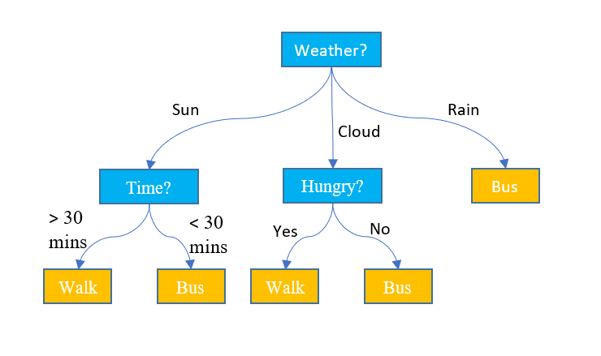
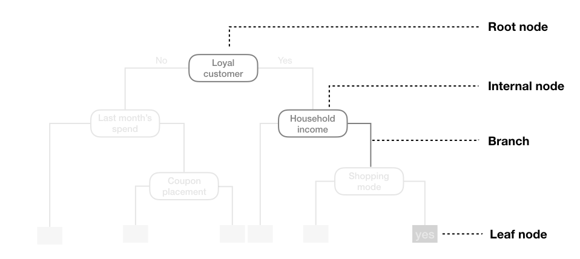
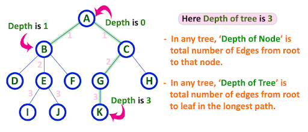
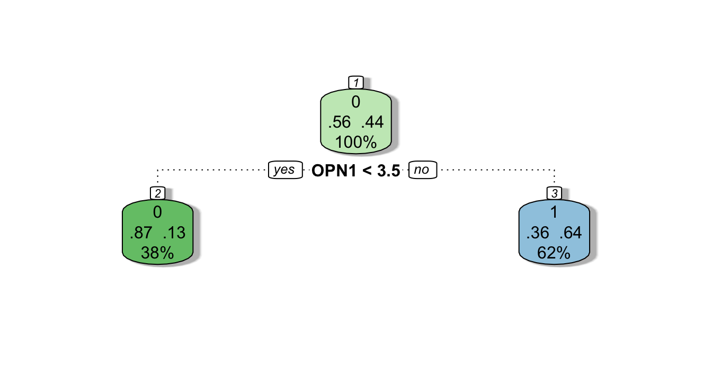
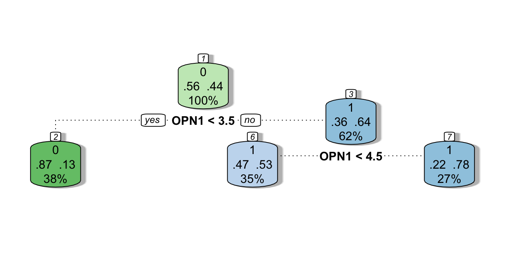
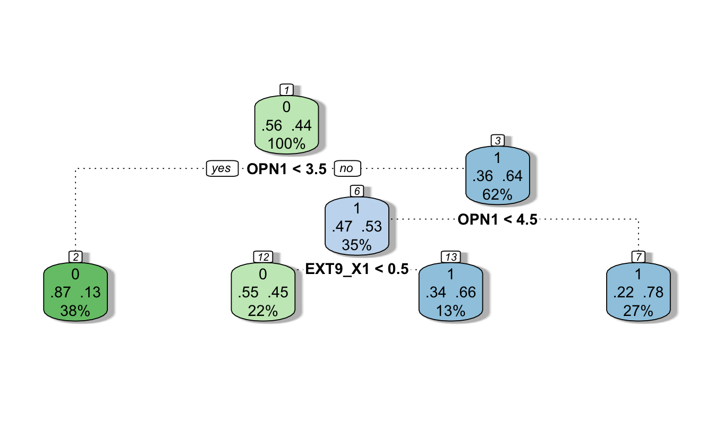
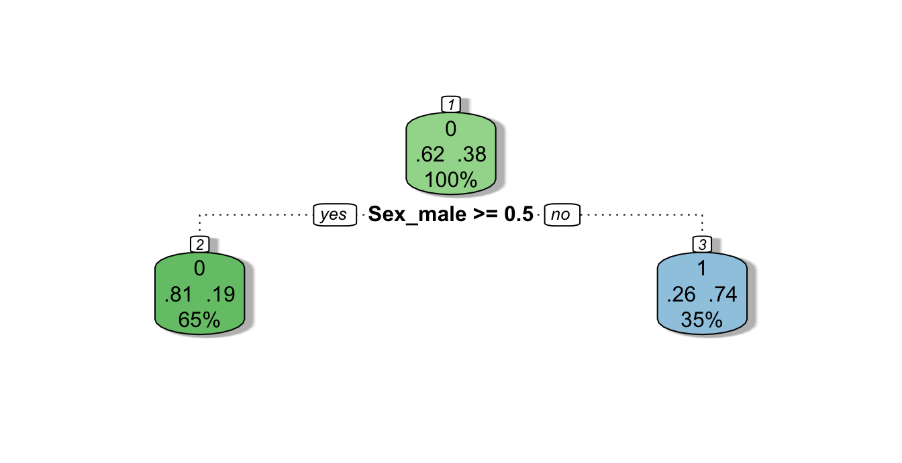
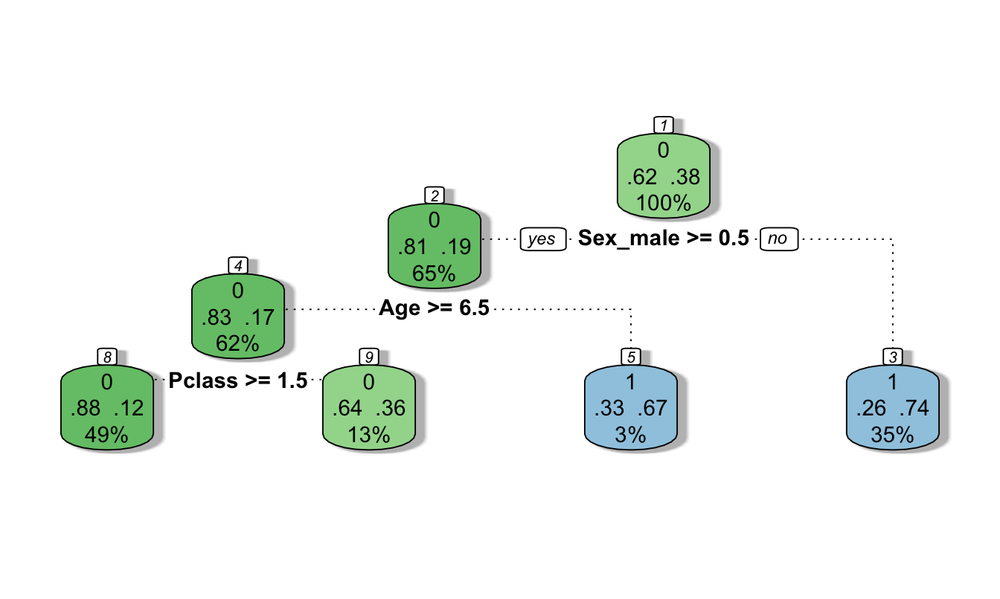
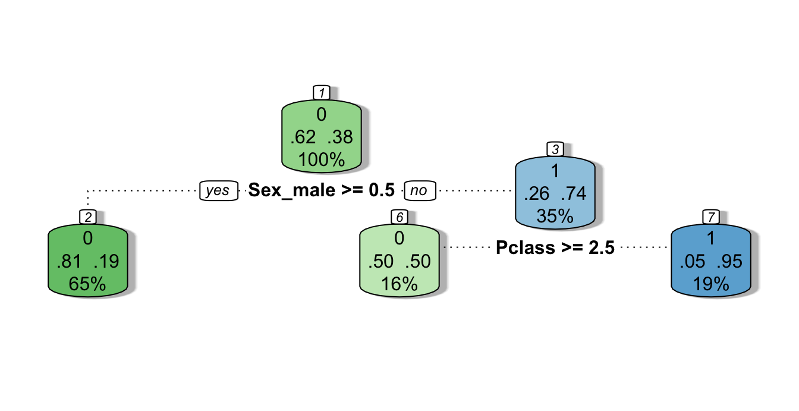

Student Attended Outcome
1 A Yes Pass
2 B Yes Pass
3 C Yes Fail
4 D No Fail
5 E No Fail
6 F No PassDecision Trees
Today’s Lecture
In today’s lecture we will cover:
- Introduction to decision trees
- How a tree chooses its splits
- Controlling the size of a tree
- Limitations of a single tree
- Two worked examples in R
A Visual Introduction to Machine Learning
This interactive story by Stephanie Yee and Tony Chu builds a decision tree, one split at a time, to tell homes in San Francisco from homes in New York. We will scroll through it and talk through each step together.
Motivating Decision Trees
An essay lands on your desk, and you suspect AI wrote it.
With a partner, take two minutes to write three yes or no questions about the text that would help you decide. Put the most useful question first, and then choose one question to further refine each branch.
Which question did you ask first, and why? What next?
Decision Trees in Real Life
Decision trees work the way people often make decisions: one step at a time, if this, then that. Each example asks a short series of yes or no questions.
- Clinical screening: PHQ-9 score above 10? → History of depression? → Recent major stressor? → elevated risk of depression
- College retention: First semester GPA below 2.5? → Living on campus? → Missed more than 20% of classes? → returns next year or not
- Employee turnover: Low job satisfaction? → Frequent overtime? → Less than 2 years on the job? → leaves or stays
- Relationship satisfaction: High perceived support? → High conflict? → High financial stress? → high or low satisfaction
- Emergency room triage: Difficulty breathing? → Oxygen saturation below 90? → Age over 65? → risk category
More Examples
- Spam filtering: Suspicious link? → Known sender? → Words like “urgent” or “winner”? → spam or not
- Loan approval: Income above a cutoff? → Debt to income ratio below a cutoff? → Prior defaults? → repays or not
- Customer churn: Used the service in the last 30 days? → More than 2 complaints? → Subscribed for over a year? → cancels or not
- Medical diagnosis: Fever? → Cough? → Positive test? → illness category
- Animal identification: Has feathers? → Can fly? → Lives mostly in water? → type of animal
What These Examples Show
- The questions can depend on the path. In clinical screening, which question comes second can depend on the answer to the first.
- No single feature has to decide. A spam filter combines several weak clues.
- A harmless looking variable can stand in for something else. In loan approval, ZIP code can act as a proxy for race and other protected characteristics.
- Real trees can be much bigger. Medical trees may use dozens or hundreds of predictors, but the logic is the same.
What Makes It Machine Learning?
In the umbrella tree, we wrote the questions and the cutoffs ourselves. A decision tree learns the questions and the cutoffs from the data.
We do not tell the model to ask whether GPA is below 2.5, then whether attendance is below 80%, then whether stress is above 7.
Instead, at every split the algorithm searches over questions of the form
\[ X_j < c \]
It learns both which variable \(X_j\) to ask about and which cutoff \(c\) gives the best split.
Regression Versus Trees
- A regression model asks: how much should each variable contribute?
- A decision tree asks: what question should I ask next?
Trees come in two kinds:
- Classification trees predict a category, such as pass or fail.
- Regression trees predict a continuous outcome, such as a final exam score.
Why Is It Called a Tree?
The model looks like a flowchart:
- You start at the root, the top of the tree.
- You follow branches based on yes or no questions about the features.
- You end at a leaf, which holds the prediction.

Parts of a Decision Tree
- Root node: the top of the tree, where the first split happens. It contains all the data.
- Internal nodes: points where the data are split on a feature.
- Branches: the lines connecting nodes, one for each answer to a split.
- Leaf nodes: the end points, where a prediction is made.
- Splits: the conditions used to divide the data at each internal node.

Back to the Essay
Your three questions were a decision tree:
- Each question is a split.
- Your first question is the root, and the order of the rest is the structure of the tree.
- Each final answer, AI or human, is a leaf.
Your questions already showed two things a tree does:
- A question only helps if the text can answer it. In a model, the questions have to come from the features we measured.
- You put your most useful question first. A tree also starts with the split that best separates the groups, then repeats inside each group.
How Do Decision Trees Work?
The tree is built by asking the same question over and over:
Which feature and split point best separate the data?
- For classification, we want splits that make each group as pure as possible, meaning mostly one class.
- For regression, we want splits that make the outcomes within each group as similar as possible, usually measured with mean squared error.
The tree keeps splitting until:
- the nodes are pure enough,
- the tree reaches a maximum depth, or
- there are too few observations left to split.
What is Purity?
A node is pure if every observation in it belongs to the same class.
Suppose we want to predict whether students pass or fail a project from whether they attend class:
Step 1: Impurity at the Root
The root node holds all 6 students: 3 pass and 3 fail.
- A node where all 20 students pass would be 100% pure.
- A node split evenly between pass and fail, like this one, is as impure as a two class node can be.
A common measure of impurity is the Gini impurity: the chance that a randomly chosen observation would be labeled wrong if we labeled it at random, using the class proportions in the node.
\[ \text{Gini} = 1 - \left[\, p(\text{Pass})^2 + p(\text{Fail})^2 \,\right] \]
or, for any number of classes,
\[ \text{Gini} = 1 - \sum_i p_i^2 \]
At the root, \(\text{Gini} = 1 - (0.5^2 + 0.5^2) = 0.5\).
Step 2: Splitting on Attendance
Now split the students by attendance and compute the Gini impurity of each group:
Gini_Yes Gini_No
0.4444444 0.4444444 - The “Yes” group has 2 pass and 1 fail, so its Gini impurity is 0.444.
- The “No” group has 2 fail and 1 pass, so its Gini impurity is 0.444.
Both groups are still impure, but each is purer than the root, at 0.5.
Other Measures of Impurity
Entropy
Measures the uncertainty in a node. Lower entropy means higher purity.
\[ \text{Entropy} = -\sum_i p_i \log_2(p_i) \]
Misclassification error
The share of observations that do not belong to the most common class in the node.
\[ \text{Misclassification error} = 1 - \max_i \, p_i \]
Like the Gini impurity, both measures help the tree choose splits that create purer nodes.
How Purity Guides Splitting
At every node, the tree faces the same question:
Which feature should I split on, and at what threshold?
To answer it, the tree tries every possible split on every feature. It picks the split that makes the child nodes purer than the parent by the largest amount.
The next slides walk through that search one step at a time.
Steps 1 and 2: Parent and Child Impurity
Step 1: Impurity at the parent node
- The parent node contains some mix of classes.
- Compute its impurity, using Gini or entropy.
Step 2: Impurity after a candidate split
For each feature and each possible split point:
- Divide the data into child nodes.
- Compute the impurity of each child node.
- Take a weighted average of the child impurities, shown on the next slide.
The Impurity of a Split
The impurity after a split is a weighted average of the child nodes:
\[ G_{\text{split}} = \sum_{j=1}^{m} \frac{N_j}{N} \, G_j \]
where
- \(G_{\text{split}}\) is the impurity after the split,
- \(m\) is the number of child nodes,
- \(N_j\) is the number of observations in child node \(j\),
- \(N\) is the number of observations in the parent node, and
- \(G_j\) is the impurity of child node \(j\).
The split with the lowest \(G_{\text{split}}\) is the best one.
Step 3: Impurity Reduction
The quality of a split is how much it reduces impurity:
\[ \Delta G = G_{\text{parent}} - G_{\text{split}} \]
where
- \(\Delta G\) is the reduction in impurity, also called the information gain,
- \(G_{\text{parent}}\) is the impurity of the parent node, and
- \(G_{\text{split}}\) is the weighted impurity after the split.
In the attendance example, both groups hold 3 of the 6 students, so \(G_{\text{split}} = \tfrac{3}{6}(0.444) + \tfrac{3}{6}(0.444) = 0.444\) and \(\Delta G = 0.5 - 0.444 = 0.056\).
Step 4: Choosing the Best Split
- The tree tries every feature and, for numeric features, every possible threshold.
- The feature and threshold with the largest impurity reduction become the split.
- The process repeats inside each child node until a stopping rule is met:
- a maximum depth,
- a minimum number of observations, or
- pure nodes.
Where Does the Splitting End?
On your own, follow this process through to its natural conclusion. Suppose the tree keeps choosing the best split, with no limits.
- How will the splitting end?
- Will the tree predict the training sample perfectly?
- What are the consequences of that?
How Low Can You Go?
A tree can keep splitting until it classifies every training observation correctly. At that point it is fitting noise, and it will predict new data poorly. To prevent this, we limit how much the tree can grow:
- Maximum depth: how many levels the tree can have.
- Minimum observations per leaf: how few observations a leaf can hold.
- Minimum observations to split: how many observations a node needs before it can be split.
- Pruning: removing branches that add little predictive power.

Early Stopping
Early stopping rules stop the tree before it grows large enough to overfit.
Maximum depth
A shallower tree is less likely to overfit. We might allow 5 or 10 levels.
- Too shallow, and the tree may underfit: more bias, less variance.
- Too deep, and it may overfit: less bias, more variance.
Minimum observations per leaf
- Allowing a single observation in a leaf invites overfitting.
- Requiring at least 10 or 20 per leaf helps the tree generalize.
Minimum impurity decrease
- Only split when the split reduces impurity by a meaningful amount.
Pruning
Pruning removes branches that do not add much predictive power. There are two approaches.
Post-pruning
Grow the full tree, then remove the branches that do not improve performance on validation data.
Pre-pruning
Add a penalty for the size of the tree to the quantity it minimizes.
- A smaller penalty allows a larger tree.
- A larger penalty forces a smaller tree.
As with regularization, we fit trees across a range of penalty values and use cross validation to pick the value that predicts new data best.
The Complexity Parameter cp
In the rpart package, which we use below, the complexity parameter cp controls how large a tree can grow. It is the main tool for balancing the size of a tree against how well it generalizes.
- Each split must reduce the lack of fit by at least
cptimes the error. - Splits that fall short are pruned away.
- A large
cpgives a smaller tree: simpler, more bias, less variance. - A small
cpgives a larger tree: more complex, less bias, more variance.
The Cost Complexity Criterion
rpart fits and prunes trees with cost complexity pruning, also called weakest link pruning. It minimizes
\[ C_{\alpha}(T) = R(T) + \alpha \, |T| \]
where
- \(R(T)\) is the error of tree \(T\), summed over its leaves,
- \(|T|\) is the number of leaves, and
- \(\alpha \ge 0\) is the penalty for each leaf. In
rpart,cpplays this role.
This has the same form as the loss in regularized regression: an error term plus a penalty for complexity.
What is \(R(T)\)?
\(R(T)\) depends on the task. It is always a sum over the leaves \(t\) of the tree.
Regression trees (method = "anova")
The squared error around each leaf’s mean:
\[ R(T) = \sum_{t \in \text{leaves}(T)} \; \sum_{i \in t} \left(y_i - \bar{y}_t\right)^2, \qquad \bar{y}_t = \frac{1}{N_t} \sum_{i \in t} y_i \]
Classification trees (method = "class")
The number of misclassified observations in each leaf:
\[ R(T) = \sum_{t \in \text{leaves}(T)} N_t \left(1 - \max_k \, p_{tk}\right), \qquad p_{tk} = \frac{1}{N_t} \sum_{i \in t} \mathbf{1}\{y_i = k\} \]
Limitations of a Single Tree
Overfitting
- A tree can keep splitting until every leaf is pure, fitting the training data perfectly.
- That captures noise, and the tree generalizes poorly.
High variance
- Small changes in the training data can produce a very different tree.
- That makes a single tree unreliable.
More Limitations
Bias toward features with many levels
- Features with many unique values, such as IDs or zip codes, offer many possible splits and can dominate.
- The tree may favor them even when they are not meaningful.
Greedy splitting
- Each split is the best one available at that step, which is only a local optimum.
- The tree can miss a better overall structure.
Bagging, random forests, and boosting, which come next, address the high variance by combining many trees.
Implementation in R
In R we use the rpart package, which implements CART (Classification and Regression Trees), the most widely used algorithm for building decision trees.
As with the earlier models, we fit it through caret::train(), here with method = "rpart".
Load the Required Packages
library(rpart) # decision trees (CART)
library(caret) # train(), cross validation, and performance metrics
library(rsample) # splitting data into training and test sets
library(tidyverse) # data manipulation and plots
library(recipes) # preprocessing recipes
library(rattle) # fancyRpartPlot() for drawing trees
library(titanic) # the Titanic data
library(psych) # describe() for descriptivesThe Personality Data
- Source: the Big Five personality test data from Kaggle, collected online by Open Psychometrics. We use 1,000 respondents.
- Items: 50 statements, 10 for each of the Big Five traits: extraversion (
EXT), emotional stability (EST), agreeableness (AGR), conscientiousness (CSN), and openness (OPN). - Scale: each statement was rated from 1 (disagree) to 5 (agree), with 3 as neutral. A 0 means the item was skipped.
- Our version: to practice preprocessing, 20 items were recoded to 0 and 1, and 10 to Low, Medium, and High. The other 20 keep the original scale.
- Target:
OPN8, “I use difficult words,” coded 1 for strongly agree and 0 otherwise. 44% of respondents are 1s.
Personality Example
We will predict OPN8 from the other personality items.
OPN8records whether a respondent strongly agrees (1) or does not strongly agree (0) with “I use difficult words.”- The predictors are the other 49 items, prepared the same way as before.
data <- read.csv("data/data-final-shuffled.csv")
# items coded 0 and 1, and items stored as text, are categories
dichotomous_vars <- colnames(data)[sapply(data, max) == 1]
character_vars <- colnames(data)[sapply(data, class) == "character"]
cat_vars <- c(character_vars, dichotomous_vars)
data[cat_vars] <- lapply(data[cat_vars], as.factor)
target <- "OPN8"
data <- data[!is.na(data[, target]), ]
set.seed(123)
split <- initial_split(data, prop = 0.7, strata = target)
data_train <- training(split)
data_test <- testing(split)The Recipe
The recipe follows the pattern from the Workflow page: impute missing values with bagged trees, then dummy code the factors.
Trees do not need centered or scaled predictors, because a split only depends on the order of the values.
one_hot = FALSE drops one level of each factor as the reference category. Regression needs that, because a full set of dummy columns is redundant with the intercept. A tree has no intercept, so it does not need it. We keep it so the recipe matches the earlier lectures.
Tuning cp with Cross Validation
We tune cp with 10 fold cross validation. tuneLength = 10 asks caret to try 10 values of cp, and metric = "Kappa" picks the one with the best Kappa, which corrects accuracy for the agreement we would expect by chance.
Cross Validation Results
CART
699 samples
49 predictor
2 classes: '0', '1'
Recipe steps: impute_bag, dummy
Resampling: Cross-Validated (10 fold)
Summary of sample sizes: 629, 629, 629, 629, 629, 629, ...
Resampling results across tuning parameters:
cp Accuracy Kappa
0.000000000 0.6867702 0.3659533
0.001618123 0.6867702 0.3659533
0.004854369 0.7053002 0.4032956
0.008090615 0.7167495 0.4269122
0.009708738 0.7138923 0.4217149
0.011326861 0.7138923 0.4240630
0.012297735 0.7167495 0.4294768
0.022653722 0.7238923 0.4448615
0.025889968 0.7181366 0.4364930
0.378640777 0.6381366 0.2416284
Kappa was used to select the optimal model using the largest value.
The final value used for the model was cp = 0.02265372.Kappa Across Values of cp
Kappa is highest at a cp of about 0.023, which gives a tree with 4 leaves.
The Final Tree as Text
n= 699
node), split, n, loss, yval, (yprob)
* denotes terminal node
1) root 699 309 0 (0.5579399 0.4420601)
2) OPN1< 3.5 268 35 0 (0.8694030 0.1305970) *
3) OPN1>=3.5 431 157 1 (0.3642691 0.6357309)
6) OPN1< 4.5 245 116 1 (0.4734694 0.5265306)
12) EXT9_X1< 0.5 156 70 0 (0.5512821 0.4487179) *
13) EXT9_X1>=0.5 89 30 1 (0.3370787 0.6629213) *
7) OPN1>=4.5 186 41 1 (0.2204301 0.7795699) *Plotting the Tree
Each box is a node:
- The top line is the predicted class.
- The middle line gives the share of each class in the node, 0 first and then 1.
- The bottom line is the percentage of the training data that reaches the node.
The split rule is printed below each box. Respondents who meet it go left.
Reading the Tree: The First Split

- At the root, the tree predicts
OPN8 = 0with probability 0.56. That is the share of training respondents who do not strongly agree with “I use difficult words.” - The first split is on
OPN1, “I have a rich vocabulary.” - Respondents who scored 3 or lower on
OPN1(OPN1 < 3.5) go left, to a leaf with 38% of the sample. In that leaf, 0.87 haveOPN8 = 0. - Respondents who scored 4 or 5 go right. In that node, 0.64 have
OPN8 = 1.
Reading the Tree: The Second Split

The right branch splits on OPN1 again:
- Respondents who scored 5 (
OPN1 >= 4.5) go to a leaf with 27% of the sample, where 0.78 haveOPN8 = 1. - Respondents who scored 4 go to a node with 35% of the sample, where 0.53 have
OPN8 = 1. That node splits once more.
Reading the Tree: The EXT9 Split

Respondents who scored 4 on OPN1 split on EXT9_X1, the dummy column for EXT9, “I don’t mind being the center of attention.”
- Respondents who do not endorse
EXT9(EXT9_X1 < 0.5) go to a leaf with 22% of the sample. The tree predictsOPN8 = 0, with probability 0.55. - Respondents who endorse
EXT9(EXT9_X1 >= 0.5) go to a leaf with 13% of the sample. The tree predictsOPN8 = 1, with probability 0.66.
How Well Does the Tree Predict?
The test set gives the verdict, and we use it once.
Confusion Matrix and Statistics
Reference
Prediction 1 0
1 87 32
0 46 136
Accuracy : 0.7409
95% CI : (0.6875, 0.7894)
No Information Rate : 0.5581
P-Value [Acc > NIR] : 4.129e-11
Kappa : 0.4688
Mcnemar's Test P-Value : 0.141
Sensitivity : 0.6541
Specificity : 0.8095
Pos Pred Value : 0.7311
Neg Pred Value : 0.7473
Prevalence : 0.4419
Detection Rate : 0.2890
Detection Prevalence : 0.3953
Balanced Accuracy : 0.7318
'Positive' Class : 1
The tree classifies 74% of the test respondents correctly. It catches 65% of those who strongly agree (sensitivity) and 81% of those who do not (specificity).
Always guessing 0 would already be right 56% of the time. Kappa corrects for that: it is 0 for guessing, and 0.47 for this tree.
Titanic Example
The titanic package includes the passenger list from the Titanic. We predict whether each passenger survived.
The features we use:
Survived: whether the passenger survived (1) or not (0). This is the target.Pclass: passenger class (1st, 2nd, 3rd).Sex: sex of the passenger.Age: age in years.SibSp: number of siblings or spouses aboard.Parch: number of parents or children aboard.Fare: ticket fare.Embarked: port of embarkation (C = Cherbourg, Q = Queenstown, S = Southampton).
Descriptives
vars n mean sd median trimmed mad min max range
PassengerId 1 891 446.00 257.35 446.00 446.00 330.62 1.00 891.00 890.00
Survived 2 891 0.38 0.49 0.00 0.35 0.00 0.00 1.00 1.00
Pclass 3 891 2.31 0.84 3.00 2.39 0.00 1.00 3.00 2.00
Name* 4 891 446.00 257.35 446.00 446.00 330.62 1.00 891.00 890.00
Sex* 5 891 1.65 0.48 2.00 1.68 0.00 1.00 2.00 1.00
Age 6 714 29.70 14.53 28.00 29.27 13.34 0.42 80.00 79.58
SibSp 7 891 0.52 1.10 0.00 0.27 0.00 0.00 8.00 8.00
Parch 8 891 0.38 0.81 0.00 0.18 0.00 0.00 6.00 6.00
Ticket* 9 891 339.52 200.83 338.00 339.65 268.35 1.00 681.00 680.00
Fare 10 891 32.20 49.69 14.45 21.38 10.24 0.00 512.33 512.33
Cabin* 11 891 18.63 38.14 1.00 8.29 0.00 1.00 148.00 147.00
Embarked* 12 891 3.53 0.80 4.00 3.66 0.00 1.00 4.00 3.00
skew kurtosis se
PassengerId 0.00 -1.20 8.62
Survived 0.48 -1.77 0.02
Pclass -0.63 -1.28 0.03
Name* 0.00 -1.20 8.62
Sex* -0.62 -1.62 0.02
Age 0.39 0.16 0.54
SibSp 3.68 17.73 0.04
Parch 2.74 9.69 0.03
Ticket* 0.00 -1.28 6.73
Fare 4.77 33.12 1.66
Cabin* 2.09 3.07 1.28
Embarked* -1.27 -0.16 0.03Fitting the Tree
Drop the columns we will not use, set the factors, build the recipe, and tune cp. Survived is a factor, so this is a classification tree.
titanic_train$PassengerId <- NULL
titanic_train$Name <- NULL
titanic_train$Ticket <- NULL
titanic_train$Cabin <- NULL
titanic_train$Survived <- as.factor(titanic_train$Survived)
titanic_train$Sex <- as.factor(titanic_train$Sex)
blueprint_titanic <- recipe(Survived ~ ., data = titanic_train) %>%
step_impute_bag(all_predictors()) %>%
step_dummy(all_factor_predictors(), one_hot = FALSE)
set.seed(559)
cv_model_titanic <- train(
blueprint_titanic,
data = titanic_train,
method = "rpart",
metric = "Kappa",
trControl = trainControl(method = "cv", number = 10),
tuneLength = 20
)Reading the Titanic Tree: The First Split

- At the root, 0.62 of passengers died, so the tree predicts
Survived = 0. - The first split is on
Sex_male, the dummy column forSex. - Men (
Sex_male >= 0.5) go left. They are 65% of passengers, and only 0.19 survived. - Women go right. They are 35% of passengers, and 0.74 survived.
Reading the Titanic Tree: Men

Men are split by age, then by class:
- Boys younger than 6.5 (
Age < 6.5) are 3% of passengers, and 0.67 survived. - Older males are 62% of passengers, and 0.17 survived. They split on class:
- Second or third class (
Pclass >= 1.5): 49% of passengers, 0.12 survived. - First class: 13% of passengers, 0.36 survived.
- Second or third class (
Reading the Titanic Tree: Women

Women are split by class:
- First or second class (
Pclass < 2.5): 19% of passengers, 0.95 survived. - Third class: 16% of passengers, 0.50 survived. The tree keeps splitting this group on fare and age.
Together, the first few splits recover “women and children first,” and show how much class mattered as well.
Performance on the Training Data
titanic_train is the only Titanic data with Survived recorded, so here we score the tree on the same passengers it was trained on. That overstates how well it would do on new passengers.
Confusion Matrix and Statistics
Reference
Prediction 1 0
1 271 48
0 71 501
Accuracy : 0.8664
95% CI : (0.8423, 0.8881)
No Information Rate : 0.6162
P-Value [Acc > NIR] : < 2e-16
Kappa : 0.714
Mcnemar's Test P-Value : 0.04372
Sensitivity : 0.7924
Specificity : 0.9126
Pos Pred Value : 0.8495
Neg Pred Value : 0.8759
Prevalence : 0.3838
Detection Rate : 0.3042
Detection Prevalence : 0.3580
Balanced Accuracy : 0.8525
'Positive' Class : 1
Wrapping Up
A single decision tree is easy to explain: anyone can follow the questions from the root to a leaf. It also handles numeric and categorical predictors, needs no scaling, and finds interactions on its own.
But a single tree has real problems:
- It overfits. Left alone, it splits until it fits the training data perfectly.
- It is unstable. Small changes can produce a very different tree. Even the size of our personality tree depended on how the folds were drawn: across 100 seeds, cross validation chose trees with anywhere from 2 to 17 leaves.
- It is greedy. Each split is the best one at that step, not the best tree overall.
Coming next: what if, instead of trusting one tree, we grew hundreds of them on slightly different samples and let them vote?
That is the idea behind bagging, random forests, and boosting.